- 00 开篇词 为什么大厂面试必考操作系统？.md.html
- 00 课前必读 构建知识体系，可以这样做！.md.html
- 01 计算机是什么：“如何把程序写好”这个问题是可计算的吗？.md.html
- 02 程序的执行：相比 32 位，64 位的优势是什么？（上）.md.html
- 03 程序的执行：相比 32 位，64 位的优势是什么？（下）.md.html
- 04 构造复杂的程序：将一个递归函数转成非递归函数的通用方法.md.html
- 05 存储器分级：L1 Cache 比内存和 SSD 快多少倍？.md.html
- 05 (1) 加餐 练习题详解（一）.md.html
- 06 目录结构和文件管理指令：rm -rf 指令的作用是？.md.html
- 07 进程、重定向和管道指令：xargs 指令的作用是？.md.html
- 08 用户和权限管理指令： 请简述 Linux 权限划分的原则？.md.html
- 09 Linux 中的网络指令：如何查看一个域名有哪些 NS 记录？.md.html
- 10 软件的安装： 编译安装和包管理器安装有什么优势和劣势？.md.html
- 11 高级技巧之日志分析：利用 Linux 指令分析 Web 日志.md.html
- 12 高级技巧之集群部署：利用 Linux 指令同时在多台机器部署程序.md.html
- 12 (1)加餐 练习题详解（二）.md.html
- 13 操作系统内核：Linux 内核和 Windows 内核有什么区别？.md.html
- 14 用户态和内核态：用户态线程和内核态线程有什么区别？.md.html
- 15 中断和中断向量：Javajs 等语言为什么可以捕获到键盘输入？.md.html
- 16 WinMacUnixLinux 的区别和联系：为什么 Debian 漏洞排名第一还这么多人用？.md.html
- 16 (1)加餐 练习题详解（三）.md.html
- 17 进程和线程：进程的开销比线程大在了哪里？.md.html
- 18 锁、信号量和分布式锁：如何控制同一时间只有 2 个线程运行？.md.html
- 19 乐观锁、区块链：除了上锁还有哪些并发控制方法？.md.html
- 20 线程的调度：线程调度都有哪些方法？.md.html
- 21 哲学家就餐问题：什么情况下会触发饥饿和死锁？.md.html
- 22 进程间通信： 进程间通信都有哪些方法？.md.html
- 23 分析服务的特性：我的服务应该开多少个进程、多少个线程？.md.html
- 23 (1)加餐 练习题详解（四）.md.html
- 24 虚拟内存 ：一个程序最多能使用多少内存？.md.html
- 25 内存管理单元： 什么情况下使用大内存分页？.md.html
- 26 缓存置换算法： LRU 用什么数据结构实现更合理？.md.html
- 27 内存回收上篇：如何解决内存的循环引用问题？.md.html
- 28 内存回收下篇：三色标记-清除算法是怎么回事？.md.html
- 28 (1)加餐 练习题详解（五）.md.html
- 29 Linux 下的各个目录有什么作用？.md.html
- 30 文件系统的底层实现：FAT、NTFS 和 Ext3 有什么区别？.md.html
- 31 数据库文件系统实例：MySQL 中 B 树和 B+ 树有什么区别？.md.html
- 32 HDFS 介绍：分布式文件系统是怎么回事？.md.html
- 32 (1)加餐 练习题详解（六）.md.html
- 33 互联网协议群（TCPIP）：多路复用是怎么回事？.md.html
- 34 UDP 协议：UDP 和 TCP 相比快在哪里？.md.html
- 35 Linux 的 IO 模式：selectpollepoll 有什么区别？.md.html
- 36 公私钥体系和网络安全：什么是中间人攻击？.md.html
- 36 (1)加餐 练习题详解（七）.md.html
- 37 虚拟化技术介绍：VMware 和 Docker 的区别？.md.html
- 38 容器编排技术：如何利用 K8s 和 Docker Swarm 管理微服务？.md.html
- 39 Linux 架构优秀在哪里.md.html
- 40 商业操作系统：电商操作系统是不是一个噱头？.md.html
- 40 (1)加餐 练习题详解（八）.md.html
- 41 结束语 论程序员的发展——信仰、选择和博弈.md.html
09 Linux 中的网络指令：如何查看一个域名有哪些 NS 记录？
我看到过一道关于 Linux 指令的面试题：如何查看一个域名有哪些 NS 记录？
这类题目是根据一个场景，考察一件具体的事情如何处理。虽然你可以通过查资料找到解决方案，但是，这类问题在面试中还是有必要穿插一下，用于确定求职者技能是否熟练、经验是否丰富。特别是计算机网络相关的指令，平时在远程操作、开发、联调、Debug 线上问题的时候，会经常用到。
Linux 中提供了不少网络相关的指令，因为网络指令比较分散，本课时会从下面几个维度给你介绍，帮助你梳理常用的网络指令：
- 远程操作；
- 查看本地网络状态；
- 网络测试；
- DNS 查询；
- HTTP。
这块知识从体系上属于 Linux 指令，同时也关联了很多计算机网络的知识，比如说 TCP/IP 协议、UDP 协议，我会在“模块七”为你简要介绍。
如果你对这部分指令背后的网络原理有什么困惑，可以在评论区提问。另外，你也可以关注我将在拉勾教育推出的《计算机网络》课程。下面我们开始学习今天的内容。
远程操作指令
远程操作指令用得最多的是ssh，ssh指令允许远程登录到目标计算机并进行远程操作和管理。还有一个比较常用的远程指令是scp，scp帮助我们远程传送文件。
ssh（Secure Shell）
有一种场景需要远程登录一个 Linux 系统，这时我们会用到ssh指令。比如你想远程登录一台机器，可以使用ssh [email protected]的方式，如下图所示：
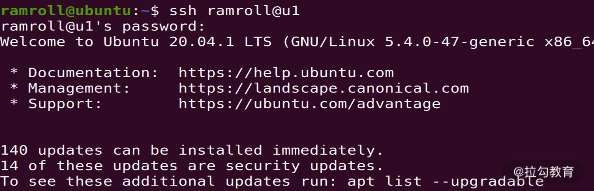
上图中，我在使用ssh指令从机器u1登录我的另一台虚拟机u2。这里u1和u2对应着 IP 地址，是我在/etc/hosts中设置的，如下图所示：
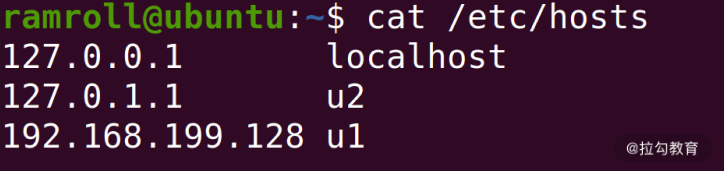
/etc/hosts这个文件可以设置 IP 地址对应的域名。我这里是一个小集群，总共有两台机器，因此我设置了方便记忆和操作的名字。
scp
另一种场景是我需要拷贝一个文件到远程，这时可以使用scp指令，如下图，我使用scp指令将本地计算机的一个文件拷贝到了 ubuntu 虚拟机用户的家目录中。
比如从u1拷贝家目录下的文件a.txt到u2。家目录有一个简写，就是用~。具体指令见下图：

输入 scp 指令之后会弹出一个提示，要求输入密码，系统验证通过后文件会被成功拷贝。
查看本地网络状态
如果你想要了解本地的网络状态，比较常用的网络指令是ifconfig和netstat。
ifconfig
当你想知道本地ip以及本地有哪些网络接口时，就可以使用ifconfig指令。你可以把一个网络接口理解成一个网卡，有时候虚拟机会装虚拟网卡，虚拟网卡是用软件模拟的网卡。
比如：VMware 为每个虚拟机创造一个虚拟网卡，通过虚拟网卡接入虚拟网络。当然物理机也可以接入虚拟网络，它可以通过虚拟网络向虚拟机的虚拟网卡上发送信息。
下图是我的 ubuntu 虚拟机用 ifconfig 查看网络接口信息。
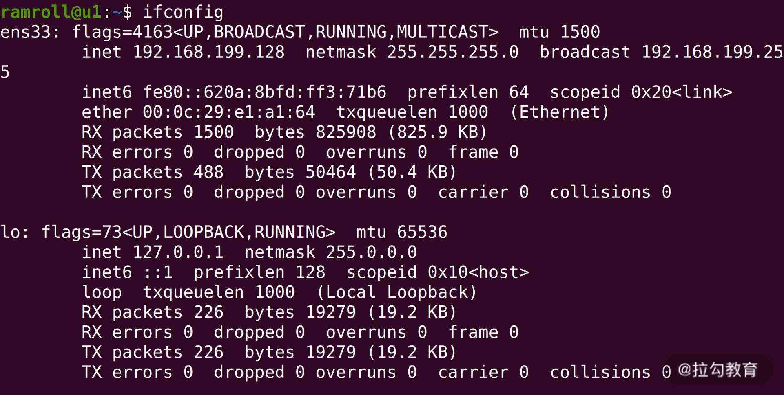
可以看到我的这台 ubuntu 虚拟机一共有 2 个网卡，ens33 和 lo。lo是本地回路（local lookback），发送给lo就相当于发送给本机。ens33是一块连接着真实网络的虚拟网卡。
netstat
另一个查看网络状态的场景是想看目前本机的网络使用情况，这个时候可以用netstat。
默认行为
不传任何参数的netstat帮助查询所有的本地 socket，下图是netstat | less的结果。
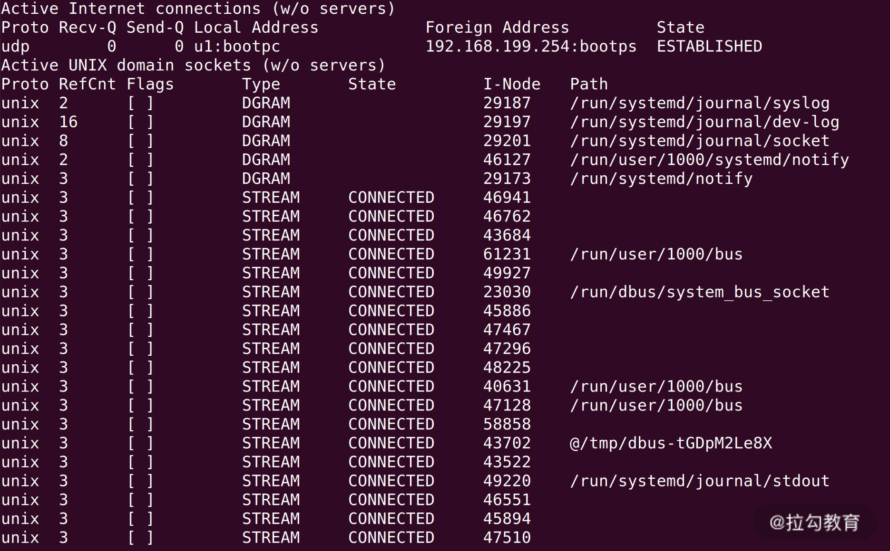
如上图，我们看到的是 socket 文件。socket 是网络插槽被抽象成了文件，负责在客户端、服务器之间收发数据。当客户端和服务端发生连接时，客户端和服务端会同时各自生成一个 socket 文件，用于管理这个连接。这里，可以用wc -l数一下有多少个socket。

你可以看到一共有 615 个 socket 文件，因为有很多 socket 在解决进程间的通信。就是将两个进程一个想象成客户端，一个想象成服务端。并不是真的有 600 多个连接着互联网的请求。
查看 TCP 连接
如果想看有哪些 TCP 连接，可以使用netstat -t。比如下面我通过netstat -t看tcp协议的网络情况：
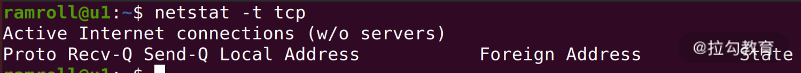
这里没有找到连接中的tcp，因为我们这台虚拟机当时没有发生任何的网络连接。因此我们尝试从机器u2（另一台机器）ssh 登录进u1，再看一次：
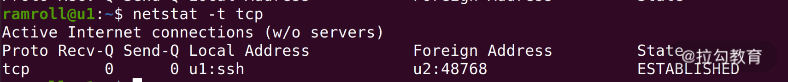
如上图所示，可以看到有一个 TCP 连接了。
查看端口占用
还有一种非常常见的情形，我们想知道某个端口是哪个应用在占用。如下图所示：
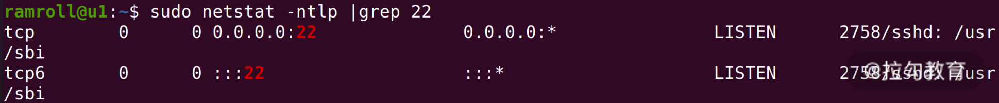
这里我们看到 22 端口被 sshd，也就是远程登录模块被占用了。-n是将一些特殊的端口号用数字显示，-t是指看 TCP 协议，-l是只显示连接中的连接，-p是显示程序名称。
网络测试
当我们需要测试网络延迟、测试服务是否可用时，可能会用到ping和telnet指令。
ping
想知道本机到某个网站的网络延迟，就可以使用ping指令。如下图所示：
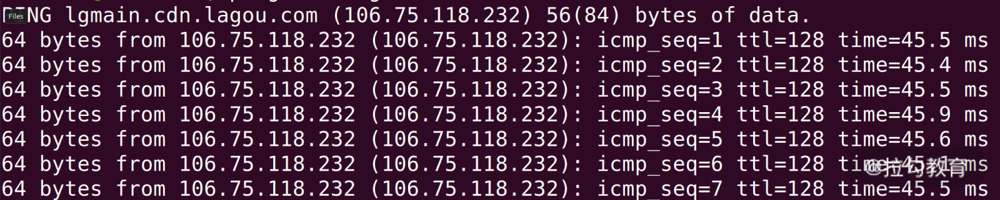
ping一个网站需要使用 ICMP 协议。因此你可以在上图中看到 icmp 序号。 这里的时间time是往返一次的时间。ttl叫作 time to live，是封包的生存时间。就是说，一个封包从发出就开始倒计时，如果途中超过 128ms，这个包就会被丢弃。如果包被丢弃，就会被算进丢包率。
另外ping还可以帮助我们看到一个网址的 IP 地址。 通过网址获得 IP 地址的过程叫作 DNS Lookup（DNS 查询）。ping利用了 DNS 查询，但是没有显示全部的 DNS 查询结果。
telnet
有时候我们想知道本机到某个 IP + 端口的网络是否通畅，也就是想知道对方服务器是否在这个端口上提供了服务。这个时候可以用telnet指令。 如下图所示：
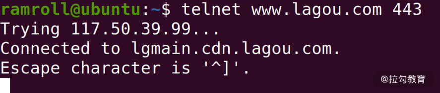
telnet 执行后会进入一个交互式的界面，比如这个时候，我们输入下图中的文字就可以发送 HTTP 请求了。如果你对 HTTP 协议还不太了解，建议自学一下 HTTP 协议。如果希望和林老师一起学习，可以等待下我之后的《计算机网络》专栏。
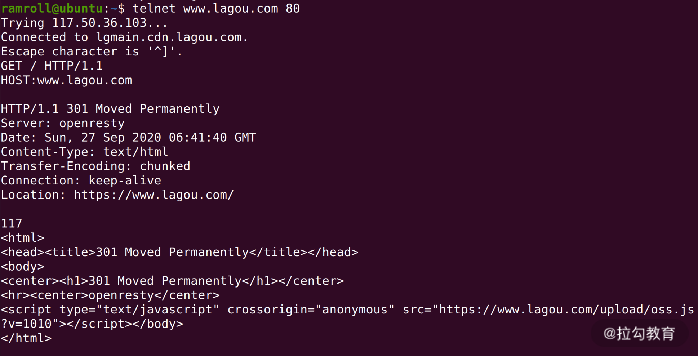
如上图所示，第 5 行的GET 和第 6 行的HOST是我输入的。 拉勾网返回了一个 301 永久跳转。这是因为拉勾网尝试把http协议链接重定向到https。
DNS 查询
我们排查网络故障时想要进行一次 DNS Lookup，想知道一个网址 DNS 的解析过程。这个时候有多个指令可以用。
host
host 就是一个 DNS 查询工具。比如我们查询拉勾网的 DNS，如下图所示：
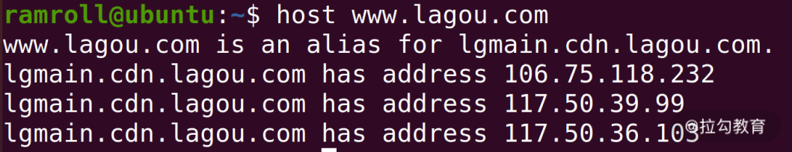
我们看到拉勾网 www.lagou.com 是一个别名，它的原名是 lgmain 开头的一个域名，这说明拉勾网有可能在用 CDN 分发主页（关于 CDN，我们《计算机网络》专栏见）。
上图中，可以找到 3 个域名对应的 IP 地址。
如果想追查某种类型的记录，可以使用host -t。比如下图我们追查拉勾的 AAAA 记录，因为拉勾网还没有部署 IPv6，所以没有找到。
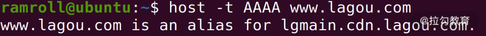
dig
dig指令也是一个做 DNS 查询的。不过dig指令显示的内容更详细。下图是dig拉勾网的结果。
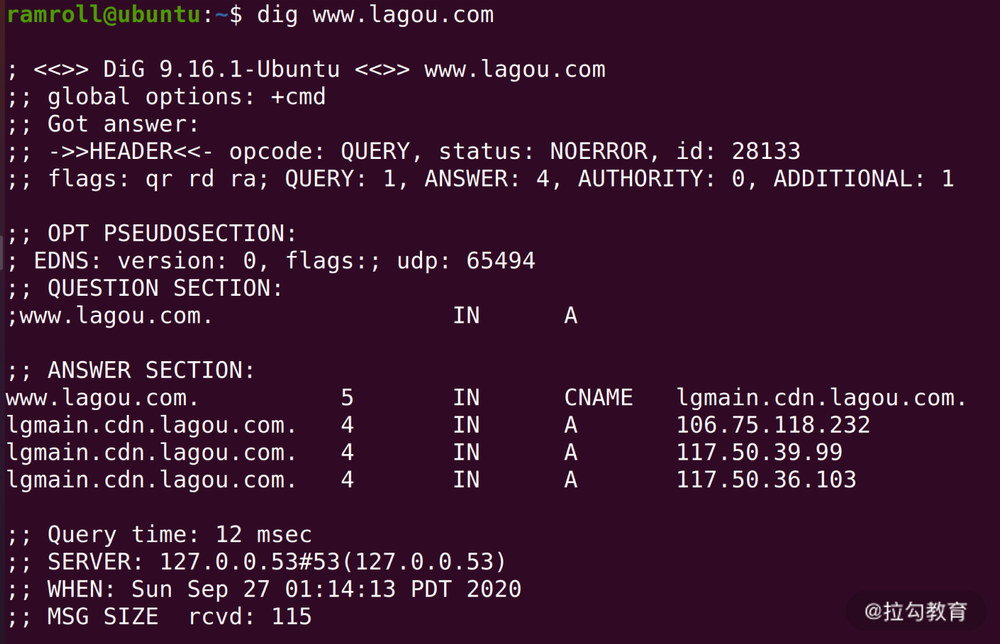
从结果可以看到www.lagou.com 有一个别名，用 CNAME 记录定义 lgmain 开头的一个域名，然后有 3 条 A 记录，通常这种情况是为了均衡负载或者分发内容。
HTTP 相关
最后我们来说说http协议相关的指令。
curl
如果要在命令行请求一个网页，或者请求一个接口，可以用curl指令。curl支持很多种协议，比如 LDAP、SMTP、FTP、HTTP 等。
我们可以直接使用 curl 请求一个网址，获取资源，比如我用 curl 直接获取了拉勾网的主页，如下图所示：
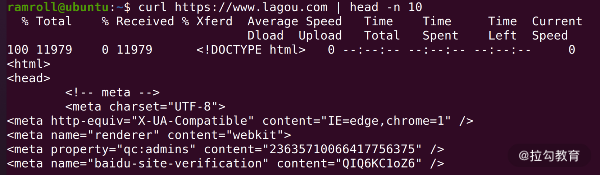
如果只想看 HTTP 返回头，可以使用curl -I。
另外curl还可以执行 POST 请求，比如下面这个语句：
curl -d '{"x" : 1}' -H "Content-Type: application/json" -X POST http://localhost:3000/api
curl在向localhost:3000发送 POST 请求。-d后面跟着要发送的数据， -X后面是用到的 HTTP 方法，-H是指定自定义的请求头。
总结
这节课我们学习了不少网络相关的 Linux 指令，这些指令是将来开发和调试的强大工具。这里再给你复习一下这些指令：
- 远程登录的 ssh 指令；
- 远程拷贝文件的 scp 指令；
- 查看网络接口的 ifconfig 指令；
- 查看网络状态的 netstat 指令；
- 测试网络延迟的 ping 指令；
- 可以交互式调试和服务端的 telnet 指令；
- 两个 DNS 查询指令 host 和 dig；
- 可以发送各种请求包括 HTTPS 的 curl 指令。
那么通过这节课的学习，你现在可以来回答本节关联的面试题目：如何查看一个域名有哪些 NS 记录了吗？
老规矩，请你先在脑海里构思下给面试官的表述，并把你的思考写在留言区，然后再来看我接下来的分析。
【解析】 host 指令提供了一个-t参数指定需要查找的记录类型。我们可以使用host -t ns {网址}。另外 dig 也提供了同样的能力。如果你感兴趣，还可以使用man对系统进行操作。